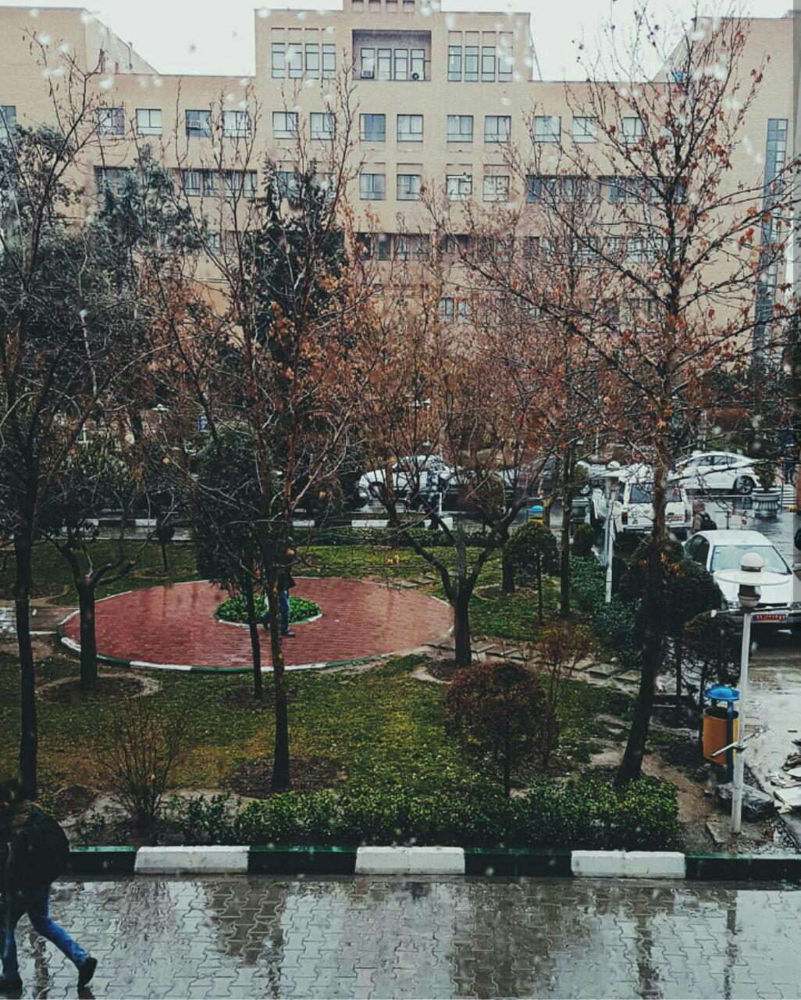

Sharif University
7 january 2016
By Sepide Sarajian
Sharif University of Technology is a public research university in Tehran, Iran known traditionally to be the first choice of top ranked Iranian high school and university students in engineering and physical sciences. The university is located in the Tarasht neighborhood of Tehran within close proximity of Azadi Square.